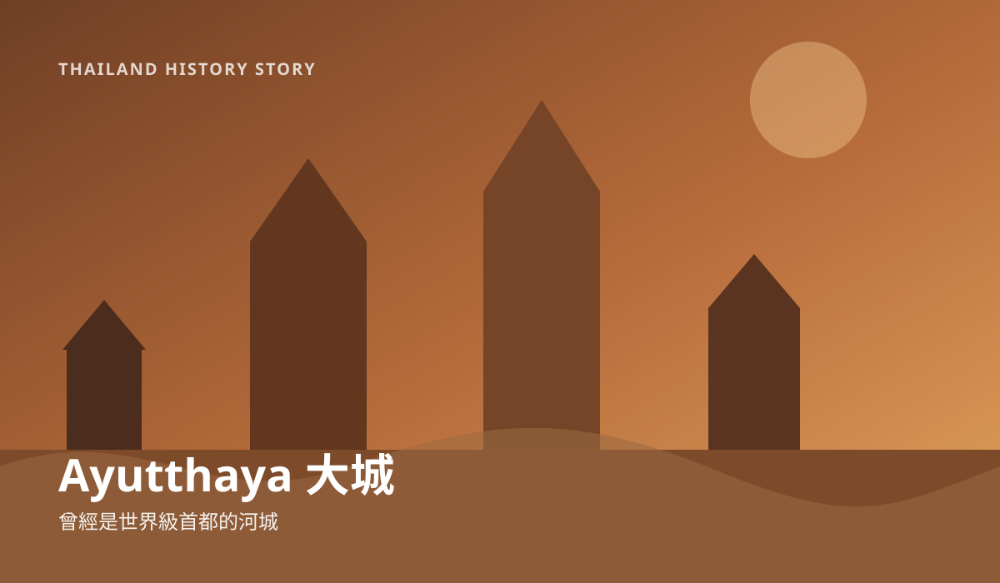

1 8/24 · Ayutthaya（大城）
第一幕：你看到的是廢墟，但 400 年前這裡熱鬧得不得了
一句話先懂：大城以前不是「古蹟區」，而是一座世界級的國際都市。

各位旅人，故事要先從大城說起。今天你看到的是紅磚、斷牆和高塔，可要是把時間往回撥幾百年，眼前可不是這麼安靜。那時候的河面上有船，城裡有宮殿、有寺院，也有來自四方的商人。
大城大約在 14 世紀中葉成為暹羅的重要首都。它的位置非常聰明：靠著河流，船可以把貨物一路帶進城裡，也能把城市和更遠的海上貿易連起來。於是中國、日本、印度、波斯，甚至歐洲的商人與使節，都曾經出現在這座城市。
所以來到大城時，別把它想成「一堆舊寺廟」。比較像是走進一座曾經超級繁華、後來突然停住的大城市。
而最重的轉折，發生在 1767 年。戰火讓大城陷落，城市受到嚴重破壞，政治中心也不再回到這裡。這就是為什麼今天你會看到許多殘缺的佛像與牆面——它們不是單純「變舊了」，而是歷史真的在這裡留下了痕跡。
👀 到現場找什麼？
- 先不要急著找最有名的拍照點，先感受整座城市到底有多大。
- 想像一下：如果這裡以前住滿人，市場、宮殿、碼頭可能各在什麼位置？
✦ 如果這一站變成會考閱讀題，你會怎麼解釋：為什麼大城能成為國際都市？